EP4 古埃及：分場表
C 分場（第 10～12 步）：把劇本分成一場一場（不拆鏡頭）→ 每場的地圖 → 這集新的設定圖。這份報告可以不看，流程不停。
摘要第 10～12 步
場一覽第 10 步
| 場 | 地點 | 時間 | 段 | 旁白句 | 地圖 |
|---|---|---|---|---|---|
| 1 | 博士的實驗室（研究小屋一樓） | 夏天中午 | 0 | 7 | lab |
| 2 | 博士的實驗室（研究小屋一樓） | 夏天中午 | 1 | 12 | lab |
| 3 | 尼羅河岸邊（排隊上船的地方） | 古埃及・夏天早上 | 2 | 10 | ep4_nile |
| 4 | 插圖：尼羅河氾濫（不是實景） | — | 3 | 7 | — |
| 5 | 尼羅河上的船 | 古埃及・夏天早上 | 3 | 1 | ep4_nile |
| 6 | 插圖：博士上課——法老的國家與勞役（手機螢幕＋手繪插圖，不是實景） | — | 4 | 16 | — |
| 7 | 往吉薩的水道和港口 | 古埃及・夏天上午 | 5 | 4 | ep4_harbor |
| 8 | 吉薩高原工地（看見半完工的金字塔） | 古埃及・夏天上午 | 5 | 8 | ep4_site |
| 9 | 金字塔南邊的工人村 | 古埃及・夏天傍晚到隔天早上 | 6 | 16 | ep4_village |
| 10 | 插圖：博士上課——金字塔怎麼來的（手機螢幕＋手繪插圖，不是實景） | — | 7 | 17 | — |
| 11 | 吉薩工地・採石場和斜坡 | 隔天早上 | 8 | 21 | ep4_site |
| 12 | 吉薩工地・拉石頭 | 上午 | 9 | 16 | ep4_site |
| 13 | 吉薩工地・大拉石 | 中午 | 10 | 21 | ep4_site |
| 14 | 工地旁的尼羅河水道邊 | 下午 | 11 | 22 | ep4_harbor |
| 15 | 吉薩工地 | 傍晚 | 12 | 6 | ep4_site |
| 16 | 博士的實驗室（研究小屋一樓） | 夏天下午 | 13 | 5 | lab |
| 17 | 博士的實驗室（研究小屋一樓） | 夏天下午 | 14 | 2 | lab |
每一場第 10、11 步
第 1 場 博士的實驗室（研究小屋一樓） 夏天中午・段落 0
旁白全文
- 0-01今天，你只不過幫博士搬一箱東西，就喘得像剛跑完馬拉松。
- 0-02博士卻在旁邊悠悠說了一句：四千五百年前，有一群人，就在比這還熱的天氣裡，
- 0-03一塊一塊，堆出了一座一百四十六公尺高的石頭山。
- 0-04之後將近四千年，它都是全世界最高的建築。
- 0-05而且他們差不多每隔幾分鐘，就得放上一塊比汽車還重的大石頭。
- 0-06就這樣一塊接一塊，整整蓋了一代人。
- 0-07你低頭看了看手上的箱子。（停）你不信。
出場角色和狀態
- HERO 夏天的打扮（跟 EP3 一樣：短袖、短褲、拖鞋，沒帽子、沒背包），手機在口袋，搬一箱器材、滿頭大汗
- PROF 指著窗外的太陽講古埃及
道具
一箱器材、電扇
地圖 lab第 11 步

第 2 場 博士的實驗室（研究小屋一樓） 夏天中午・段落 1
旁白全文
- 1-01上一次你學乖了，這次打定主意：要先拿到錢，再上時光機。
- 1-02博士說沒問題，然後塞給你一袋麵包。
- 1-03還說，這是預付的工錢。
- 1-04原來博士想弄懂一件事：吉薩大金字塔，到底是怎麼蓋起來的？
- 1-05這座塔，古埃及人把它叫做「胡夫的地平線」。
- 1-06工人大概花了二十幾年，堆了超過兩百萬塊大石頭，才把它蓋起來。
- 1-07沒有奴隸，也沒有大型機器，靠的是繩子、滑橇，和很多很多的人。
- 1-08而其中最難解的，就是那道斜坡到底是怎麼搭的。
- 1-09所以博士要你回到西元前 2550 年，古埃及的古王國時期，
- 1-10去幫法老胡夫，蓋他的陵墓。
- 1-11你看了看那袋麵包，還是決定去了。
- 1-12生存指南又被推了過來，你又把它放回桌上。
出場角色和狀態
- HERO 夏天的打扮（跟 EP3 一樣：短袖、短褲、拖鞋，沒帽子、沒背包），手機在口袋，伸手要錢、拿到一袋麵包
- PROF 在黑板畫金字塔和斜坡、打問號
道具
一袋麵包（預付的工錢）、黑板、生存指南、時光機
地圖 lab第 11 步
第 3 場 尼羅河岸邊（排隊上船的地方） 古埃及・夏天早上・段落 2
旁白全文
- 2-01光一閃，你落到了古埃及的夏天。
- 2-02熱，熱到空氣都在晃。
- 2-03這裡的夏天常常接近攝氏三十八度，碰上熱浪還會更高。
- 2-04你被推進一群人裡，跟著排隊。
- 2-05有很長一段時間，學者都以為，蓋金字塔的一定是奴隸。
- 2-06可是跟你一起排隊的這些人，並不是奴隸。
- 2-07他們是自由的埃及勞工。
- 2-08男人圍著一條纏腰布，女人穿著窄窄的長裙，或是有肩帶的披肩。
- 2-09你低頭看看自己的短褲和拖鞋。
- 2-10你伸手想拿生存指南。（停）它又躺在博士的桌上。
出場角色和狀態
- HERO 夏天的打扮（跟 EP3 一樣：短袖、短褲、拖鞋，沒帽子、沒背包），手機在口袋，熱到發昏
- WORKERS 被徵召的埃及農民工人（男人圍纏腰布、女人穿窄長裙或披肩；不是奴隸），排隊
道具
—
地圖 ep4_nile第 11 步

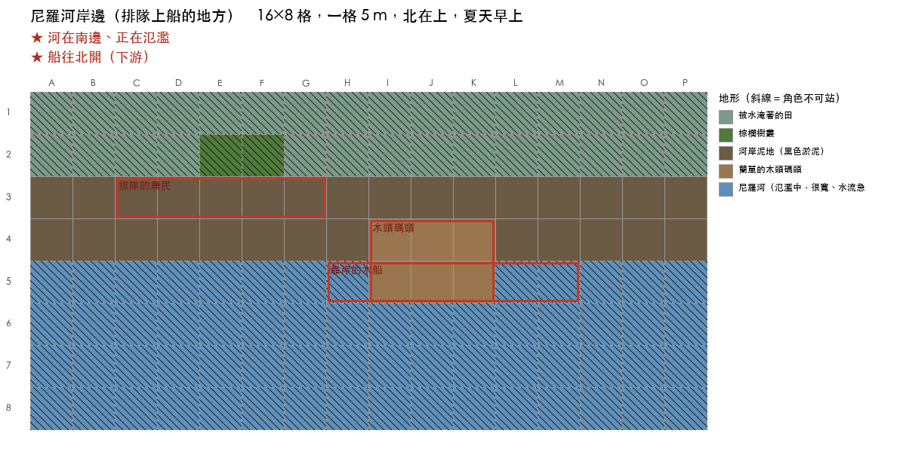
第 4 場 插圖：尼羅河氾濫（不是實景） —・段落 3
旁白全文
- 3-01你很快就搞懂，自己為什麼會被抓來這裡。
- 3-02原來每年夏天，尼羅河都會氾濫。
- 3-03那些水，是從遙遠的衣索比亞高地一路流下來的。
- 3-04大水把淤泥帶到這片乾燥的土地，讓兩岸變成世界上最肥沃的農田之一。
- 3-05可是田泡在水裡的那幾個月，農夫根本沒辦法種田。
- 3-06於是法老就把這些閒下來的農夫找來，服幾個月的勞役。
- 3-07他們一批一批輪流上工，白天出力，天黑收工。
出場角色和狀態
- —
道具
插圖：大水從南邊高地流下、淹過兩岸的田、留下黑色淤泥；農夫輪流上工
地圖 （沒有實景，不用地圖）第 11 步
第 5 場 尼羅河上的船 古埃及・夏天早上・段落 3
第 6 場 插圖：博士上課——法老的國家與勞役（手機螢幕＋手繪插圖，不是實景） —・段落 4
旁白全文
- 4-01這時候，你口袋裡的手機亮了起來，博士要上課了。
- 4-02他說，胡夫統治的埃及，大概住了超過一百萬人。
- 4-03當然那時候沒有人口普查，這只是學者估算出來的。
- 4-04而這項工程大到，可能牽動了全國每一個人的生活。
- 4-05整個埃及分成四十二個行政區。
- 4-06法老底下大致分成幾個系統：管國王身邊事務的王室、打仗的軍隊、管神廟的祭司，
- 4-07還有一大群負責收稅、記帳的文官。
- 4-08那時候沒有錢幣，大家用東西換東西，連繳稅也是繳實物。
- 4-09養牛的地方繳牛，種麥的地方就繳穀子。
- 4-10稅率大約是一成。
- 4-11不過官員不會去量農夫到底收了多少，怕他們把收成藏起來。
- 4-12他們量的是尼羅河洪水有多高，再對照往年，算出這一區該繳多少。
- 4-13而每年那幾個月的勞役，同樣算是稅的一部分。
- 4-14不交稅的人會被打、被關，有時候連全家都被扣住。
- 4-15說到這裡，博士補了一句：
- 4-16蓋了史上最大金字塔的胡夫，目前確定留下來的雕像，只有一尊大約七公分半的象牙小人。
出場角色和狀態
- HERO 夏天的打扮（跟 EP3 一樣：短袖、短褲、拖鞋，沒帽子、沒背包），手機在口袋（只在第一句：看手機）
- PROF 在手機螢幕上講課
道具
手機（螢幕）、插圖：分成很多小區的古埃及、量尼羅河水位的文官、扛牛扛穀子繳稅的農民、一尊小小的象牙雕像
地圖 （沒有實景，不用地圖）第 11 步
第 7 場 往吉薩的水道和港口 古埃及・夏天上午・段落 5
旁白全文
- 5-01大水一漲，一隊又一隊的船，就沿著河、順著特地挖好的水道，
- 5-02把石頭、工具、食物和工人，一路送到吉薩的工地旁邊。
- 5-03有一位叫梅勒的官員，還把運石頭的日子寫成了日記。
- 5-04外層要用的白色石灰岩，就是這樣從尼羅河對岸的圖拉採石場，一船一船運過來的。
出場角色和狀態
- HERO 夏天的打扮（跟 EP3 一樣：短袖、短褲、拖鞋，沒帽子、沒背包），手機在口袋，在船上
- WORKERS 被徵召的埃及農民工人（男人圍纏腰布、女人穿窄長裙或披肩；不是奴隸）
道具
一隊又一隊的木船、船上的石頭、工具、食物、白色石灰岩塊
地圖 ep4_harbor第 11 步

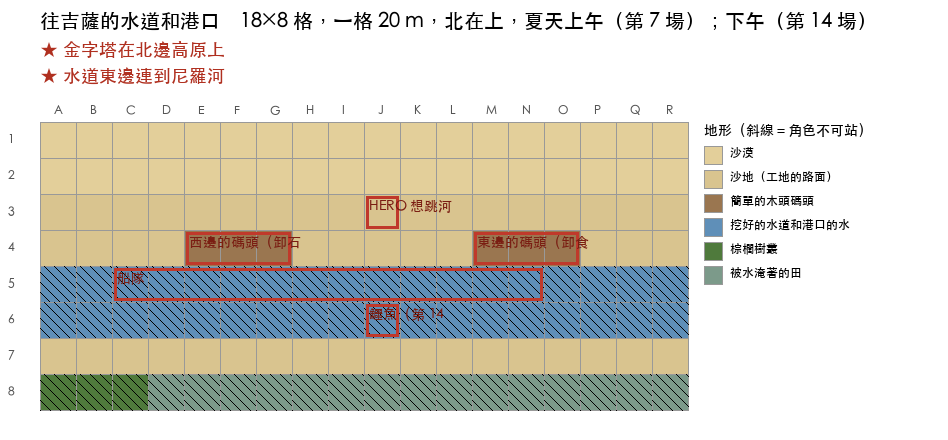
第 8 場 吉薩高原工地（看見半完工的金字塔） 古埃及・夏天上午・段落 5
旁白全文
- 5-05然後，你就看到了它。
- 5-06半完工的金字塔，已經從高原上冒出大約六十公尺高。
- 5-07它還沒發亮，灰撲撲的，一層一層像階梯。
- 5-08要等整座蓋好，工人才會從塔頂一路往下，
- 5-09把外層的白色石灰岩磨得又平又亮，
- 5-10到那時候，它就會在陽光下閃閃發光。
- 5-11對了，你在這裡，看不到另外兩座金字塔，也看不到人面獅身像。
- 5-12因為它們，都是胡夫之後的國王才蓋的。
出場角色和狀態
- HERO 夏天的打扮（跟 EP3 一樣：短袖、短褲、拖鞋，沒帽子、沒背包），手機在口袋，抬頭看金字塔
- WORKERS 被徵召的埃及農民工人（男人圍纏腰布、女人穿窄長裙或披肩；不是奴隸）
道具
半完工的金字塔（灰撲撲的一層層階梯、約 60 公尺高）
地圖 ep4_site第 11 步

第 9 場 金字塔南邊的工人村 古埃及・夏天傍晚到隔天早上・段落 6
旁白全文
- 6-01你被帶到金字塔旁邊的工人村。
- 6-02這裡住了好幾萬個工人，熱鬧得像當時世界上最早出現的大城市。
- 6-03一排排長長的營房，隨便一棟至少就能住兩千人。
- 6-04你晚上就睡在這裡，跟幾十個人擠在大通鋪上。
- 6-05旁邊還有麵包坊，還有釀啤酒的地方。
- 6-06早餐吃得飽飽的：啤酒、麵包，還有燉牛腳。
- 6-07等一下，早餐喝啤酒？
- 6-08原來古埃及的啤酒濃濃稠稠的像粥，酒精很淡，連小孩都喝。
- 6-09對他們來說，這東西不是用來喝醉的，比較像是能喝的麵包。
- 6-10考古學家在這裡挖出好幾萬根動物骨頭，大多是牛、綿羊和山羊。
- 6-11他們估計，這裡每天要吃掉將近兩公噸的肉，才餵得飽這麼多工人。
- 6-12工人分到的肉、魚、麵包和啤酒，比他們在家鄉吃得還好。
- 6-13比較好的牛肉，通常留給管事的人和技術工匠，每天分一小塊。
- 6-14因為一頭牛要從很遠的三角洲牧場趕過來，貴到差不多要工人存上大半年的薪水。
- 6-15這座工人城和他們的墓地，都是考古學家一點一點挖出來的。
- 6-16那片墓地，還是因為一位遊客騎馬經過，馬被埋在沙裡的土磚牆絆了一跤，才意外被發現的。
出場角色和狀態
- HERO 夏天的打扮（跟 EP3 一樣：短袖、短褲、拖鞋，沒帽子、沒背包），手機在口袋，睡大通鋪、吃早餐
- WORKERS 被徵召的埃及農民工人（男人圍纏腰布、女人穿窄長裙或披肩；不是奴隸），吃飯、睡覺
道具
長長的營房和大通鋪、麵包坊、釀啤酒的大缸、麵包、啤酒、燉牛腳、成堆的牛羊骨頭
地圖 ep4_village第 11 步

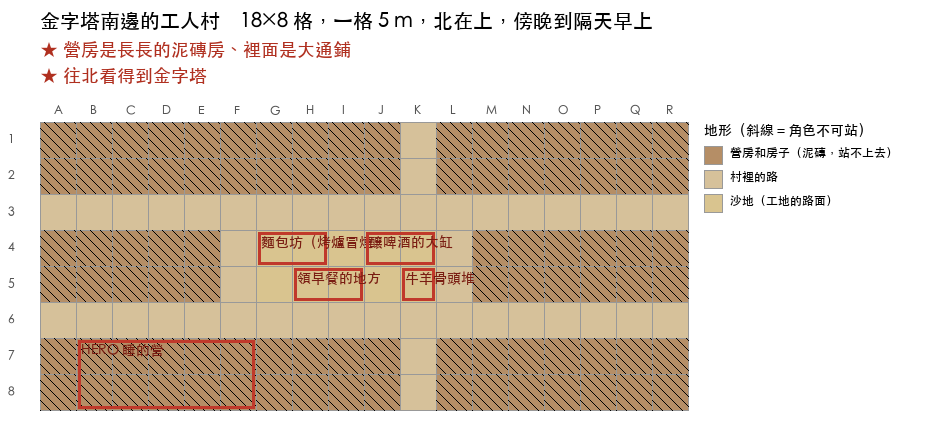
第 10 場 插圖：博士上課——金字塔怎麼來的（手機螢幕＋手繪插圖，不是實景） —・段落 7
旁白全文
- 7-01晚上，手機又亮了，博士要講金字塔是怎麼來的。
- 7-02最早，埃及人的墳墓是一種長椅形狀的東西，叫做「馬斯塔巴」。
- 7-03後來有一位叫印和闐的人，把一層一層的長椅疊起來，
- 7-04替法老左塞爾，蓋出了一座像大型結婚蛋糕的階梯金字塔。
- 7-05再後來，斯尼夫魯王想把一層層階梯，改成光滑的斜面。
- 7-06可是這沒那麼容易，他前兩座蓋得太陡，地基又太軟，結果都失敗了。
- 7-07其中一座蓋到一半發現太陡，只好把角度改平緩一點，就變成了彎彎的「彎曲金字塔」。
- 7-08記取教訓後，他在堅硬的岩石上，蓋出了埃及第一座真正成功的金字塔：紅色金字塔。
- 7-09到了胡夫這一座，側面角度大約五十二度，已經很接近垂直了。
- 7-10它的底座，大概有十座美式足球場那麼大，
- 7-11卻被整得幾乎完全水平，整片高高低低差不到一個拇指寬。
- 7-12那麼，到底是誰負責蓋的？
- 7-13大家通常認為，是胡夫身邊最有權力的官員之一，總建築師 Hemiunu。
- 7-14不過 2013 年找到的那本梅勒日記，又指向了胡夫的兄弟，Ankhhaf。
- 7-15還有，吉薩的金字塔為什麼排成一條斜線？
- 7-16有一種說法是，高原底下的石灰岩是斜著走的，它們剛好蓋在最硬的那條岩脊上。
- 7-17也有人說，這跟天上獵戶座的腰帶有關；到現在，都還沒有定論。
出場角色和狀態
- PROF 在手機螢幕上講課
道具
插圖：長椅形的馬斯塔巴、階梯金字塔、彎曲金字塔、紅色金字塔、大金字塔的側面角度、斜走的岩層、獵戶座腰帶
地圖 （沒有實景，不用地圖）第 11 步
第 11 場 吉薩工地・採石場和斜坡 隔天早上・段落 8
旁白全文
- 8-01第二天一早，你就上工了。
- 8-02採石的工人一整年都待在這裡，先把大量的石灰岩塊備好。
- 8-03而像你這種季節工，負責的就是搬。
- 8-04採石組的人，每人領一支銅鑿子。
- 8-05銅其實很軟，不太適合鑿石頭，可是那時候也沒有更好的工具了。
- 8-06而且銅得靠船隊，從紅海對岸的礦區運回來，非常珍貴。
- 8-07所以管事的人，會仔細秤每個工人帶進來的銅，一點都不能少。
- 8-08採石場就在金字塔旁邊，差不多幾百公尺，走幾分鐘就到。
- 8-09石頭大多是附近採的石灰岩，平均每塊大約兩噸半。
- 8-10輕的只有一噸，重的可以到八十噸。
- 8-11最重的花崗岩，還得從南邊大約八百公里外的亞斯文運過來。
- 8-12你被編進一個二十人一組的工作隊。
- 8-13問題來了：這麼重的石頭，到底要怎麼拉上去？
- 8-14連最懂金字塔的專家都說，斜坡要怎麼搭，是蓋金字塔最傷腦筋的難題之一。
- 8-15如果做一條長長的、緩緩的坡道直通塔頂，用掉的材料會比金字塔本身還多。
- 8-16所以學者推測，他們是用一段一段的臨時斜坡，把石塊拉上去定位。
- 8-17考古學家也在採石場底下的碎石裡，挖到一段像是舊坡道的遺跡，坡度很緩。
- 8-18不過這只是其中一種解釋，到今天還沒有定論。
- 8-19照研究者的推算，這條坡道只蓋到金字塔的四分之一高。
- 8-20可是別小看這四分之一：金字塔底部又寬又厚，蓋到這裡時，一半以上的石塊其實都已經堆好了。
- 8-21學者還推測，金字塔蓋好以後，工人就把斜坡拆掉，把碎石倒回挖出來的大坑裡。
出場角色和狀態
- HERO 夏天的打扮（跟 EP3 一樣：短袖、短褲、拖鞋，沒帽子、沒背包），手機在口袋，在二十人的工作隊裡拉石頭
- WORKERS 被徵召的埃及農民工人（男人圍纏腰布、女人穿窄長裙或披肩；不是奴隸），採石、搬石頭
- FOREMAN 工頭
道具
銅鑿子、秤銅的秤、石灰岩塊、滑橇、臨時斜坡、插圖：採石場和一段段臨時斜坡
地圖 ep4_site第 11 步
第 12 場 吉薩工地・拉石頭 上午・段落 9
旁白全文
- 9-01工頭給你看了一張圖。
- 9-02那是後來一座墓裡的壁畫，畫的正是古埃及人怎麼拉重東西。
- 9-03畫上一百七十多個工人，用繩子拉著一座將近六十噸重的大雕像。
- 9-04雕像前面，還有一個人站在滑橇上，往地上倒水。
- 9-05為什麼要倒水？
- 9-06因為沙子一濕，就變硬、變滑。
- 9-072014 年，荷蘭的科學家就做了實驗：在滑橇前面的沙子上灑適量的水，要出的力氣可以少大約一半。
- 9-08那座雕像，就這樣被一路拉了十幾公里。
- 9-09你手上這條繩子，是棕櫚纖維做的，很結實，
- 9-10能承受非常大的拉力，拿來拖和綁大石頭。
- 9-11他們把人分成一隊一隊，讓每個人出大約一百多磅的力，
- 9-12差不多就像一群人合力推一台拋錨的大車。
- 9-13有拔河選手的研究說，一個人大概能拉出自己體重一倍半的力。
- 9-14人越多，每個人出的力雖然會打一點折，
- 9-15可是全部加起來，還是大到能拖動幾十噸的大石頭。
- 9-16而最重的那種，得要好幾百個人一起拉。
出場角色和狀態
- HERO 夏天的打扮（跟 EP3 一樣：短袖、短褲、拖鞋，沒帽子、沒背包），手機在口袋，拉繩子
- WORKERS 被徵召的埃及農民工人（男人圍纏腰布、女人穿窄長裙或披肩；不是奴隸），一大群人拉繩、一個人在滑橇前倒水
- FOREMAN 工頭，拿壁畫給 HERO 看
道具
插圖：Djehutihotep 墓的壁畫（一百多人拉大雕像、前面有人倒水）、滑橇上的大石頭、棕櫚纖維繩、水罐
地圖 ep4_site第 11 步
第 13 場 吉薩工地・大拉石 中午・段落 10
旁白全文
- 10-01然後，最難的一關來了。
- 10-02總建築師 Hemiunu 親自下令：你和另外幾百個人，各就拉繩位置。
- 10-03要拉的是一塊花崗岩橫梁，幾十噸重，最重的可能到八十噸。
- 10-04動手前，先學幾招保命的。
- 10-05英格蘭拔河協會有一位當了很久祕書的專家，看了幾十年的拔河比賽。
- 10-06他說：手臂打直，身體往後倒，用腿出力，別只靠手拉。
- 10-07最好是用更有力的背和腿去「推」，而不是用手去「拉」，才比較不會受傷。
- 10-08有一項拔河世界賽選手的研究就發現，受傷最多的是背，差不多每十個受傷就有四個；手的擦傷、水泡也很常見。
- 10-09而最重要的一條：絕對不要把繩子繞在手、手指，或身上任何地方。
- 10-10因為繩子的拉力，可以輕易壓碎你的骨頭。
- 10-11萬一旁邊的人一撐不住，你就會被拖在滑動的石頭後面。
- 10-12這種大型拔河，真的出過事。
- 10-131995 年，德國一群童軍，大約六百五十個人，排成一條超長的拔河。
- 10-14結果繩子突然斷掉，像鞭子一樣彈回去；一個孩子被打中，另一個在大家摔成一團時被壓傷，都沒能救回來。
- 10-151997 年，台灣也有一千六百個人，一起拉一條承受不了那麼大力氣的繩子。
- 10-16他們使出了十八萬磅的力，繩子一斷，猛力彈回，把站在最前面兩個人的手臂都扯斷了。
- 10-17這麼多人一起拉的力氣，大到連鋼筋都能拉斷。
- 10-18所以，最好別站在繩子和石頭的前面。
- 10-19博士還轉述了埃及學家 Colleen Darnell 說的，古埃及人寫下的工作守則：
- 10-20不要偷東西，上工不要喝醉，還有，愛抱怨的人會被看不起。
- 10-21你默默把抱怨吞了回去，退到繩子旁邊，用力拉。
出場角色和狀態
- HERO 夏天的打扮（跟 EP3 一樣：短袖、短褲、拖鞋，沒帽子、沒背包），手機在口袋，最後退到繩子側面用力拉
- WORKERS 被徵召的埃及農民工人（男人圍纏腰布、女人穿窄長裙或披肩；不是奴隸），幾百個人排在長繩兩邊
- HEMIUNU 總建築師 Hemiunu，站在高處下令
- PROF 在手機螢幕上（轉述工作守則那兩句）
道具
滑橇上一塊巨大的花崗岩橫梁、很長的棕櫚纖維繩、插圖：拔河的正確姿勢、插圖：1995 德國、1997 台灣的大型拔河斷繩（不畫血腥）
地圖 ep4_site第 11 步
第 14 場 工地旁的尼羅河水道邊 下午・段落 11
旁白全文
- 11-01拉完石頭，真正難熬的，其實是這個夏天本身。
- 11-02酷熱最容易要人命的，就是剛上工的頭幾天。
- 11-03美國的統計說，跟高溫有關的死亡，將近一半發生在上工第一天，超過七成發生在前兩週。
- 11-04一開始是頭暈、頭痛、抽筋、想吐；嚴重的話會嘔吐、脈搏變弱，甚至神智不清。
- 11-05你看著旁邊的尼羅河，好想一頭跳下去。
- 11-06千萬別。水流很急，河裡還有鱷魚。
- 11-07而且水裡，還藏著一種叫血吸蟲的小扁蟲。
- 11-08牠會鑽過你的皮膚，順著血管跑到肝臟，在那裡長大、產卵。
- 11-09感染過幾個星期，你就會開始發燒，整個人累到提不起勁。
- 11-10要是拖成慢性的，還可能引起腸道的病、癌症、癲癇，甚至死掉。
- 11-11它是世界上僅次於瘧疾、破壞力第二大的寄生蟲。
- 11-12考古學家就在好幾具古埃及的木乃伊身上，驗出了血吸蟲。
- 11-13在這裡，工人們常常一連忙上好多天，才能歇一天。
- 11-14搬著幾噸重的大石頭，腳上穿的卻只是露出腳趾的涼鞋。
- 11-15工人墓地的骨頭上，手臂、腿、手，到處都是骨折的痕跡。
- 11-16大多數人有嚴重的關節炎，有些人甚至失去了手或腳。
- 11-17他們平均三十五歲，就過世了。
- 11-18還好，古埃及的醫者很會處理骨折，懂得用夾板固定。
- 11-19很多骨折都順利長好，有些人甚至撐過了截肢，活了下來。
- 11-20可是碰上關節炎、寄生蟲這種病，他們的藥方就差多了，
- 11-21像是動物糞便做的藥膏，還有死蒼蠅和煮熟老鼠熬的湯。
- 11-22對了，好幾千年後，還一直有人爬上金字塔又摔下來，後來終於禁止攀爬了。
第 15 場 吉薩工地 傍晚・段落 12
旁白全文
- 12-01該回家了，你按下回家按鈕。
- 12-02（停）沒有反應。
- 12-03按鈕的縫裡卡滿了細沙，而且燙得你差點拿不住。
- 12-04你把它泡進工地倒在沙子上用的那桶水裡，沖掉細沙，順便降溫。
- 12-05終於，它亮了。
- 12-06光一閃，你回到了現代。
出場角色和狀態
- HERO 夏天的打扮（跟 EP3 一樣：短袖、短褲、拖鞋，沒帽子、沒背包），手機在口袋，按回家按鈕
道具
回家按鈕（卡滿細沙、很燙）、一桶水
地圖 ep4_site第 11 步
第 16 場 博士的實驗室（研究小屋一樓） 夏天下午・段落 13
旁白全文
- 13-01回到實驗室，你一身風沙，把證據拿給博士看。
- 13-02你親眼證實了：蓋金字塔的不是奴隸，而是輪流服役、吃得飽飽的農民。
- 13-03博士卻說，這個嘛，大家早就知道了，不算什麼新發現。
- 13-04而且你的工錢，他早就先付過了。
- 13-05他指了指那袋麵包。（停）裡面只剩下麵包屑。
出場角色和狀態
- HERO 夏天的打扮（跟 EP3 一樣：短袖、短褲、拖鞋，沒帽子、沒背包），手機在口袋，一身風沙、伸手討錢
- PROF 搖手指、指著麵包袋
道具
手機（裡面的證據）、只剩麵包屑的麵包袋
地圖 lab第 11 步
第 17 場 博士的實驗室（研究小屋一樓） 夏天下午・段落 14
旁白全文
- 14-01下一集，博士又盯上了另一個時代。
- 14-02而你，還在想那袋麵包到底算多少錢。
出場角色和狀態
- HERO 夏天的打扮（跟 EP3 一樣：短袖、短褲、拖鞋，沒帽子、沒背包），手機在口袋，一臉不想再被坑
- PROF 眼睛發亮、攤開新地圖
道具
新的地圖（只畫圖案）
地圖 lab第 11 步
設定圖（這集新畫的）第 12 步
古埃及金字塔工人：男工人（白纏腰布）、女工人（窄長裙、水罐）、工頭（短木杖）、年輕工人（光頭側髮） REF_WORKERS 用在：第 3～15 場
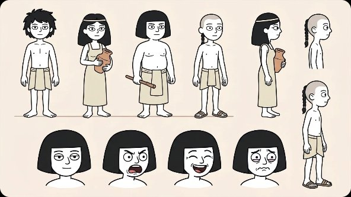
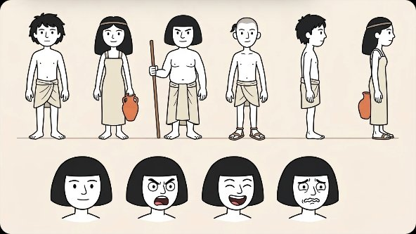
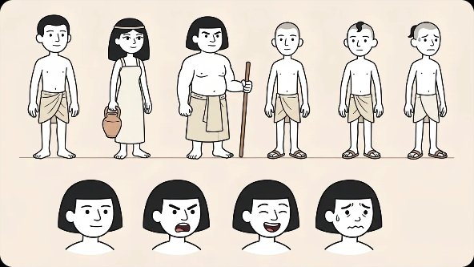
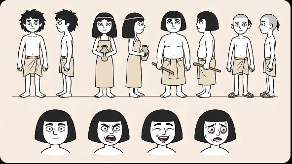
我選：第 4 條 四人正面側面並排；工頭短木杖、女工人水罐、年輕工人光頭側髮都對
prompt（中文）和附的參考圖
參考圖：REF_HERO、REF_PROF
總建築師 Hemiunu：又高又胖、彩色珠子領圈、百褶長裙、長木杖 REF_HEMIUNU 用在：第 13 場（大拉石）
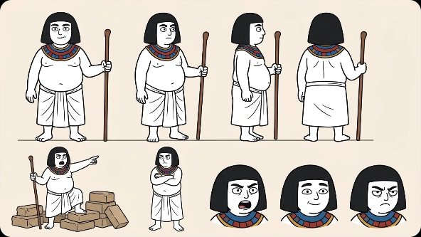
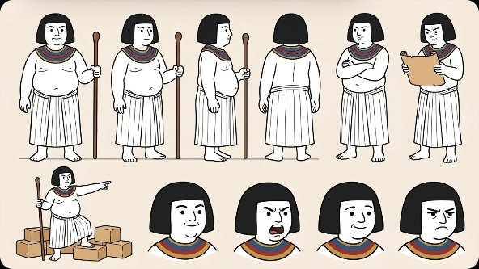
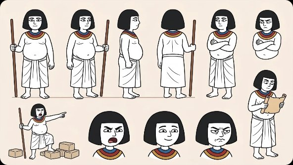
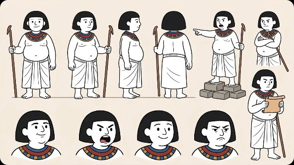
我選：第 2 條 長到小腿的百褶長裙、彩色珠子領圈、長木杖都照設定；站石塊堆指揮、抱胸、看莎草紙三個動作齊
prompt（中文）和附的參考圖
參考圖：REF_HERO、REF_PROF
EP4 道具：銅鑿子和木槌、天平、棕櫚纖維繩、滑橇載石塊、水罐（倒水）、麵包和啤酒、卡沙的回家按鈕、布袋 REF_PROPS4 用在：全集
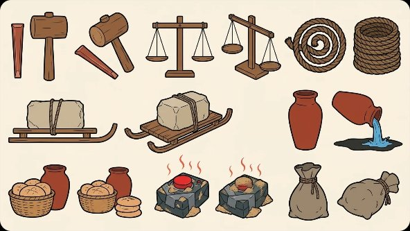
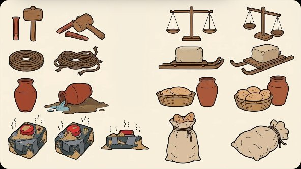
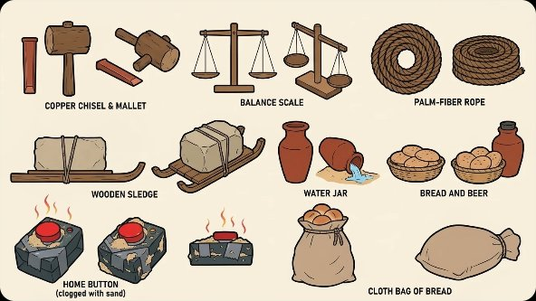
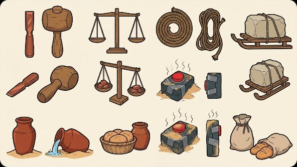
我選：第 1 條 沒有文字、8 樣道具都齊（第 3 條有文字標籤）
prompt（中文）和附的參考圖
參考圖：REF_PROPS
古埃及動物：尼羅鱷（也有只露眼睛在水面的）、長角牛、綿羊、山羊 REF_ANIMALS 用在：第 9、14 場
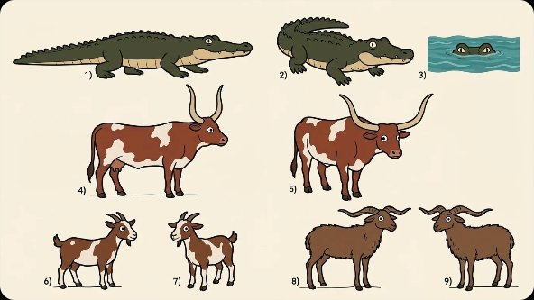
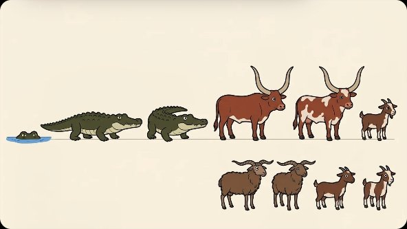
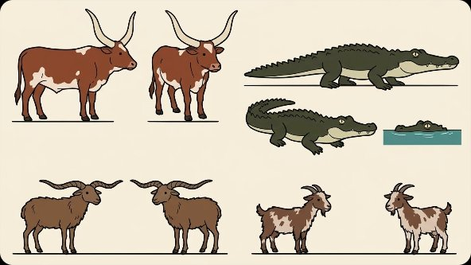
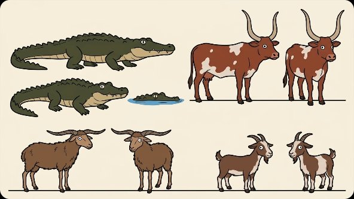
我選：第 4 條 動物大、清楚；有鱷魚只露眼睛在水面（第 14 場用）；第 1 條有數字標號
prompt（中文）和附的參考圖
參考圖：REF_PROPS
尼羅河木船：載石頭的貨船、載人的船、木頭碼頭 REF_BOAT 用在：第 3、5、7 場
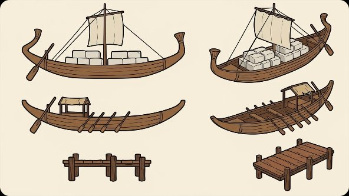
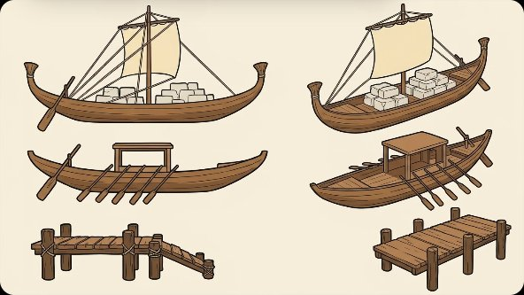
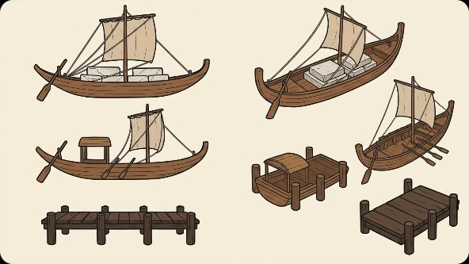
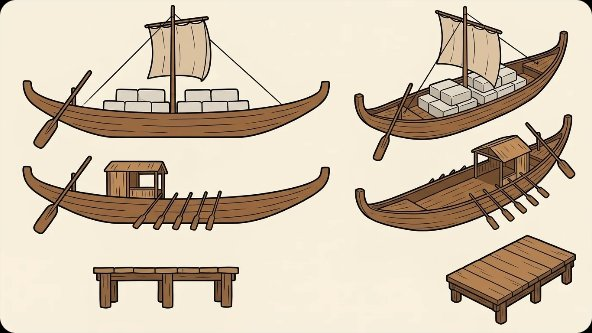
我選：第 4 條 貨船（方帆、白石灰岩塊）、載人船（小棚子、槳）、木碼頭都齊，最大最清楚
prompt（中文）和附的參考圖
參考圖：REF_PROPS
吉薩工地：半完工的金字塔（灰撲撲階梯、臨時斜坡）、採石場、完工的白色金字塔 REF_PYRAMID 用在：第 7、8、11～13、15 場
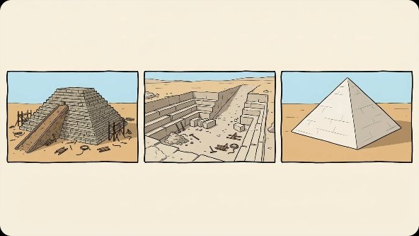
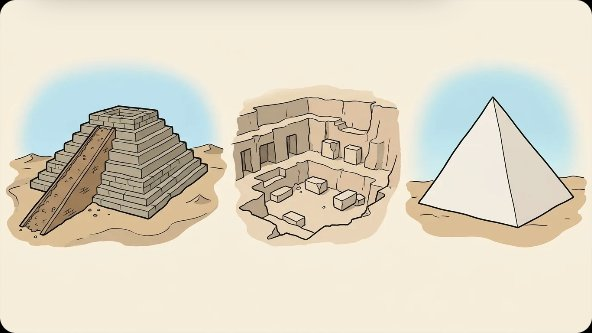
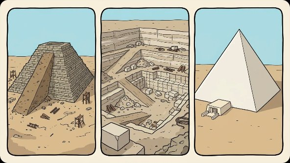
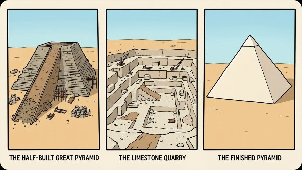
我選：第 3 條 沒有文字、最大；半完工＝平頂灰階梯＋臨時斜坡、採石場、完工的白色金字塔三格都對（第 4 條有文字標籤）
prompt（中文）和附的參考圖
參考圖：REF_PROPS